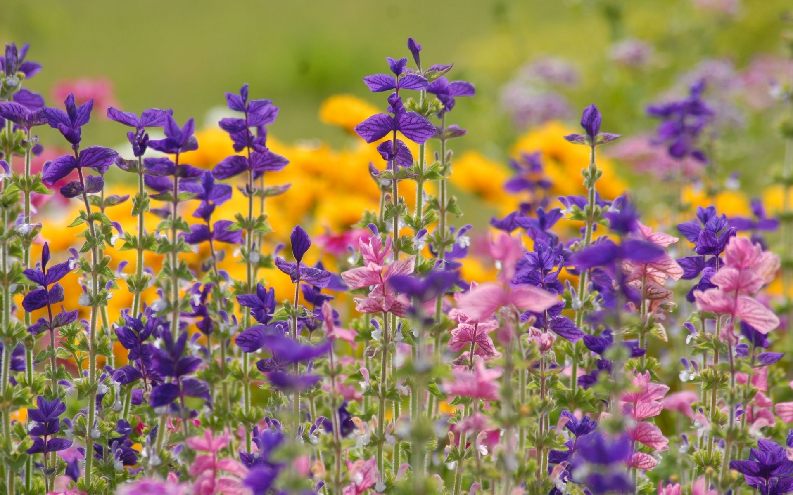
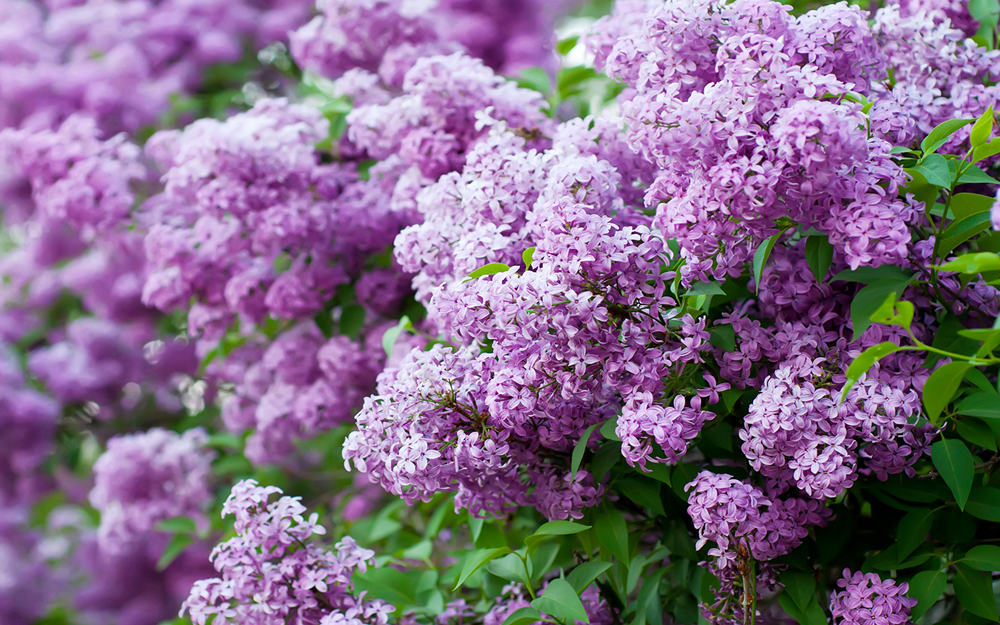

Цветы в русской поэзии
Лилии
Я лилий нарвала прекрасных и душистых,
Стыдливо-замкнутых, как дев невинных рой,
С их лепестков, дрожащих и росистых,
Пила я аромат и счастье и покой.
И сердце трепетно сжималось, как от боли,
А бледные цветы качали головой,
И вновь мечтала я о той далекой воле,
О той стране, где я была с тобой…
(1904)
Анютины глазки
Анютины глазки,
Жасмин, маргаритки,
Вы — буквы на свитке
Поблекнувшей сказки.
Вы где-то дышали,
Кому-то светили,
Без слез, без печали,
Вы жили, вы были.
И вот чрез мечтанья,
Воздушны и зыбки,
Вы шлете сиянья,
Дарите улыбки.
Вы шлете мне ласки,
В бессмертном избытке,
Жасмин, маргаритки,
Анютины глазки.
(1905)
Гвоздики
Когда расцветают гвоздики в лесах,
Последние летние дни истекают.
В гвоздиках июльские дни замыкают
Ту юную кровь, что алеет в лучах.
И больше не вспыхнут, до нового года,
Такие рубины, такая свобода.
(1905)
Седой одуванчик
Одуванчик, целый мир,
Круглый как земля,
Ты зовешь меня на пир,
Серебря поля.
Ты мне ясно говоришь:
Расцветай с Весной.
Будет нега, будет тишь,
Будь в весельи мной.
Поседеешь, отцветешь,
Разлетишься весь
Но тоска и страхи — ложь,
Счастье вечно здесь.
Поседеешь, но седой
Помни свой черед.
Будешь снова золотой,
Утром, через год.
(1905)
Эдельвейс
Я на землю смотрю с голубой высоты.
Я люблю эдельвейс, неземные цветы,
Что растут далеко от обычных оков,
Как застенчивый сон заповедных снегов.
С голубой высоты я на землю смотрю,
И безгласной мечтой я с душой говорю,
С той незримой Душой, что мерцает во мне
В те часы, как иду к неземной вышине.
И, помедлив, уйду с высоты голубой,
Не оставив следа на снегах за собой,
Но один лишь намек, белоснежный цветок,
Мне напомнит, что Мир бесконечно широк.
(1897)
Ландыш
Ландыш милый, ландыш нежный,
Белый ландыш, ландыш снежный,
Наш цветок!
Встал ты меж зеленых створок,
Чтоб тебя, кто только зорок,
Видеть мог.
Колокольчики качая,
В воздухе веселом мая,
Бел и чист,
Ты, как звезды, в травах светишь,
Ты узором тонким метишь
Полный лист.
Восковой и весь нездешний,
Ты блаженней, ты безгрешней
Всех цветов.
Белый, белый, белый, белый,
Беспорочный, онемелый,
Тайный зов!
Как причастница одетый,
Ты влечешь в святые светы
Каждый взгляд,
Чтобы осенью ненастной,
Шарик странный, шарик красный,
Сеять яд.
(1916)

Жасмин
Цветет жасмин. Зеленой чащей
Иду над Тереком с утра.
Вдали, меж гор — простой, блестящий
И четкий конус серебра.
Река шумит, вся в искрах света,
Жасмином пахнет жаркий лес.
А там, вверху — зима и лето:
Январский снег и синь небес.
Лес замирает, млеет в зное,
Но тем пышней цветет жасмин.
В лазури яркой – неземное
Великолепие вершин.
(1904)
Полевые цветы
В блеске огней, за зеркальными стеклами,
Пышно цветут дорогие цветы,
Нежны и сладки их тонкие запахи,
Листья и стебли полны красоты.
Их возрастили в теплицах заботливо,
Их привезли из-за синих морей;
Их не пугают метели холодные,
Бурные грозы и свежесть ночей...
Есть на полях моей родины скромные
Сестры и братья заморских цветов:
Их возрастила весна благовонная
В зелени майской лесов и лугов.
Видят они не теплицы зеркальные,
А небосклона простор голубой,
Видят они не огни, а таинственный
Вечных созвездий узор золотой.
Веет от них красотою стыдливою,
Сердцу и взору родные они
И говорят про давно позабытые
Светлые дни.
(1887)

Розы
Блистая, облака лепились
В лазури пламенного дня.
Две розы под окном раскрылись —
Две чаши, полные огня.
В окно, в прохладный сумрак дома,
Глядел зеленый знойный сад,
И сена душная истома
Струила сладкий аромат.
Порою, звучный и тяжелый,
Высоко в небе грохотал
Громовый гул… Но пели пчелы,
Звенели мухи — день сиял.
Порою шумно пробегали
Потоки ливней голубых…
Но солнце и лазурь мигали
В зеркально-зыбком блеске их —
И день сиял, и млели розы,
Головки томные клоня,
И улыбалися сквозь слезы
Очами, полными огня.
(1903-1904)
Сирень
Фиолетовой, белой, лиловой,
Ледяной, голубой, бестолковой
Перед взором предстанет сирень.
Летний полдень разбит на осколки,
Острых листьев блестят треуголки,
И, как облако, стелется тень.
Сколько свежести в ветви тяжелой,
Как стараются важные пчелы,
Допотопная блещет краса!
Но вглядись в эти вспышки и блестки:
Здесь уже побывал Кончаловский,
Трогал кисти и щурил глаза.
Тем сильней у забора с канавкой
Восхищение наше, с поправкой
На тяжелый музейный букет,
Нависающий в желтой плетенке
Над столом, и две грозди в сторонке,
И от локтя на скатерти след.
(1973)

Маргаритки
О, посмотри! как много маргариток —
И там, и тут…
Они цветут; их много; их избыток;
Они цветут.
Их лепестки трехгранные — как крылья,
Как белый шелк…
Вы — лета мощь, вы — радость изобилья,
Вы светлый полк!
Готовь, земля, цветам из рос напиток,
Дай сок стеблю…
О, девушки! о, звезды маргариток!
Я вас люблю…
(1909)
Поэза о незабудках
Поет Июнь, и песни этой зной
Палит мне грудь, и грезы, и рассудок.
Я изнемог и жажду незабудок,
Детей канав, что грезят под луной
Иным цветком, иною стороной.
Я их хочу: сирени запах жуток.
Он грудь пьянит несбыточной весной;
Я их хочу: их взор лазурный чуток,
И аромат целебен, как простор.
Как я люблю участливый их взор!
Стыдливые, как томны ваши чары…
Нарвите мне смеющийся букет,
В нем будет то, чего в сирени нет,
А ты, сирень, увянь в тоске нектара.
(1909)
Георгины
Вчера — уж солнце рдело низко —
Средь георгин я шел твоих,
И как живая одалиска
Стояла каждая из них.
Как много пылких или томных,
С наклоном бархатных ресниц,
Веселых, грустных и нескромных
Отвсюду улыбалось лиц!
Казалось, нет конца их грезам
На мягком лоне тишины,-
А нынче утренним морозом
Они стоят опалены.
Но прежним тайным обаяньем
От них повеяло опять,
И над безмолвным увяданьем
Мне как-то совестно роптать.
(1859)
Осенняя роза
Осыпал лес свои вершины,
Сад обнажил свое чело,
Дохнул сентябрь, и георгины
Дыханьем ночи обожгло.
Но в дуновении мороза
Между погибшими одна,
Лишь ты одна, царица-роза,
Благоуханна и пышна.
Назло жестоким испытаньям
И злобе гаснущего дня
Ты очертаньем и дыханьем
Весною веешь на меня.
(1886)
Ромашка
Маленькое солнце на моей ладошке, -
Белая ромашка на зеленой ножке.
С белым ободочком желтые сердечки…
Сколько на лугу их, сколько их у речки!
Зацвели ромашки – наступило лето.
Из ромашек белых вяжутся букеты.
В глиняном кувшине, в банке или чашке
Весело теснятся крупные ромашки.